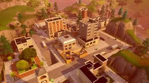
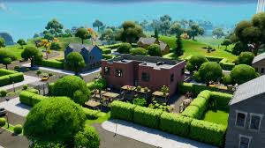
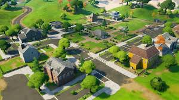
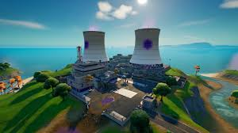
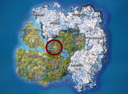
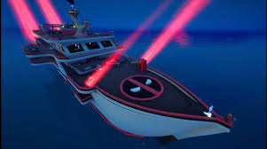

Best Drop Spots
- Tilted Towers
-

Tilted Towers is a popular and central drop spot known for high action, abundant loot, and player engagements due to its location and resources. The hot drop haven of the first few seasons, you could always rely on the mountain of loot residing in the high-rise buildings of the Tilted Towers POI. Players remember the epic firefights that would break out in the streets of Tilted Towers, oftentimes attracting the attention of other nearby combatants.
- Holly Hedges
-

A recommended "drop spot" within the Holly Hedges area is the split between the Holly Hedges location and the nearby grocery store, known for its high number of potential chests and abundance of lootable mechanical parts from vehicles and workbenches. This tactical spot provides an excellent opportunity for a team to quickly acquire weapons, especially the pump shotgun, and fully equip themselves.
- Pleasant Park
-

A named location with a football field, gas station, and numerous houses that offer good loot, though it can be a high-traffic "hot drop" area where players must be prepared for immediate combat. A recommended strategy is to land in the middle of the area to acquire a weapon and a shield bubble for an immediate advantage.
- Steamy Stacks
-

The "best" drop spot at Steamy Stacks in Fortnite depends on your strategy; landing at the back of the location offers a safer start with more chests, while landing in the front/main building provides quick access to high-tier loot but attracts more players, according to a YouTube video. Other useful spots include the cooling towers for mobility and the green building for chests and metal.
- The Fort
-

Is Canyon Crossing in Fortnite Chapter 6 Season 4, identified as a great landing location for its abundant loot, potential for fighting droids with significant drops, capturing points for rank and more loot, and access to military chests and NPCs. Other recommended drop spots include the Supernova Academy for its secret vault and training challenges, and the area around the Fallen AT-ATs for secret vaults with multiple chests.
- Deadpool Yacht
-

Refers to The Yacht, a named location from Fortnite's Chapter 2 Season 2, located in the far north of the map, which was the site of a "Deadpool's Yacht Party" challenge and where players found Deadpool's floaties in an orange container, near the top-floor rooms, and on the lower floors.